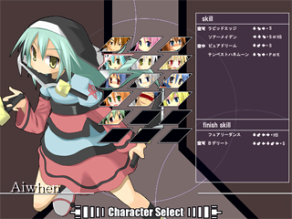
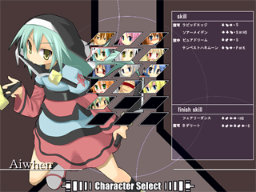

| ・VS CPU |
  VS CPUモードは、CPUと戦って勝ち進んでいくモードです。 難易度はイージー、ノーマル、ハードの３種類から選択できます。 EASY 初心者向け。 敵は、攻撃もガードもあまりしませんし、ボスも出現しません。 軽くこのゲームに慣れるためにご利用ください。 NORMAL 初心者〜中級者向け。 基本コンボ程度を決めてきます。 HARD 中級者〜上級者向け。 スキルブレーキングを使った大ダメージコンボや、崩しを狙ってきます。 |
| ・VS CPU |
|  VS CPUモードは、CPUと戦って勝ち進んでいくモードです。 難易度はイージー、ノーマル、ハードの３種類から選択できます。 EASY 初心者向け。 敵は、攻撃もガードもあまりしませんし、ボスも出現しません。 軽くこのゲームに慣れるためにご利用ください。 NORMAL 初心者〜中級者向け。 基本コンボ程度を決めてきます。 HARD 中級者〜上級者向け。 スキルブレーキングを使った大ダメージコンボや、崩しを狙ってきます。 |